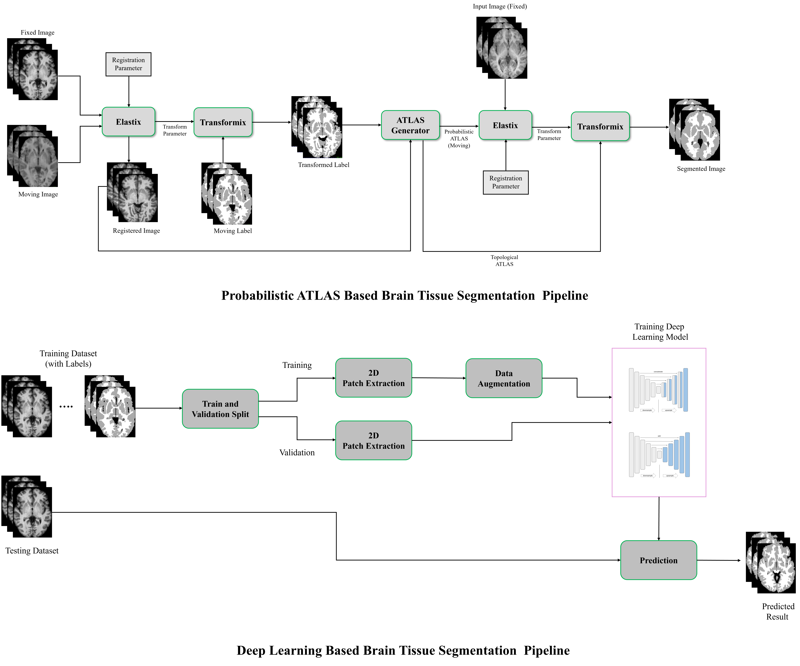
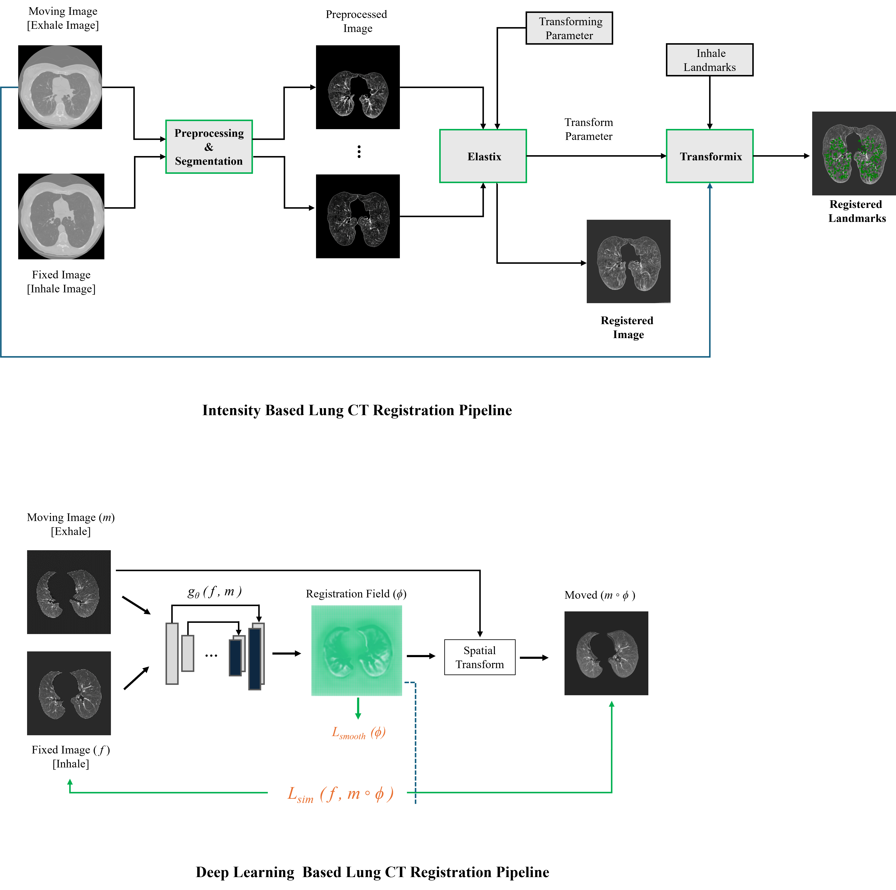
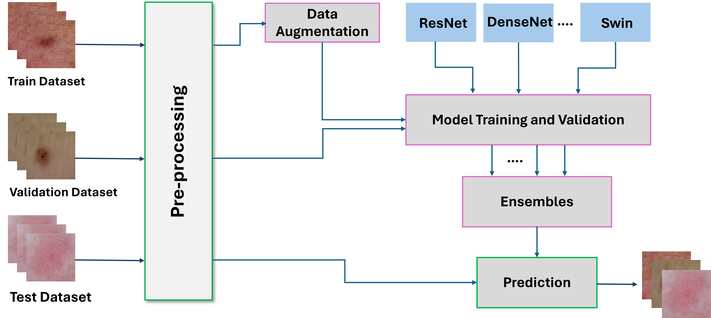
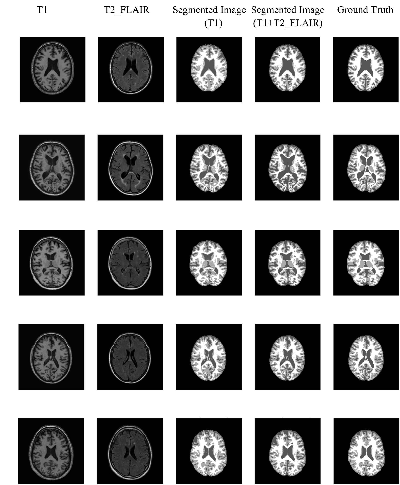
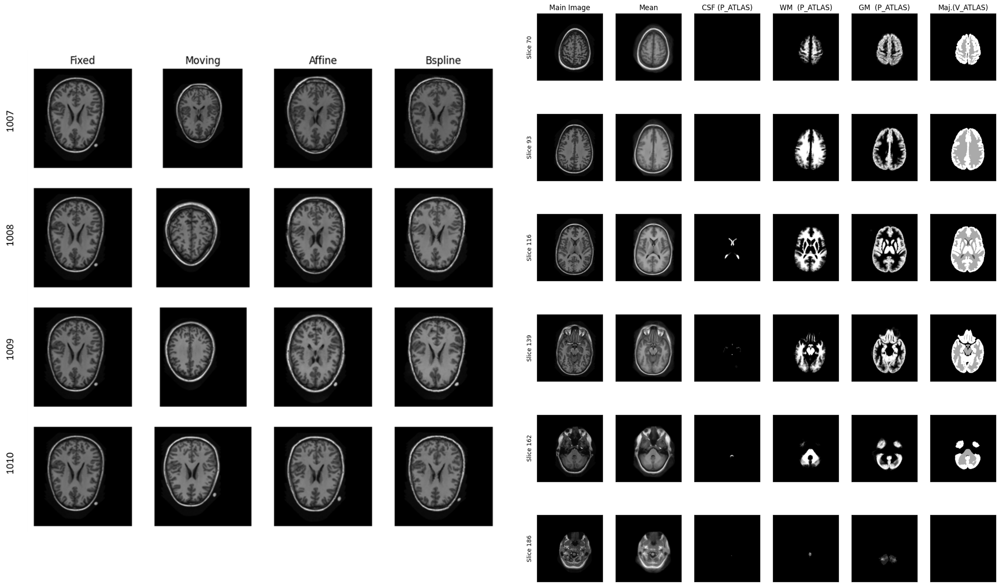
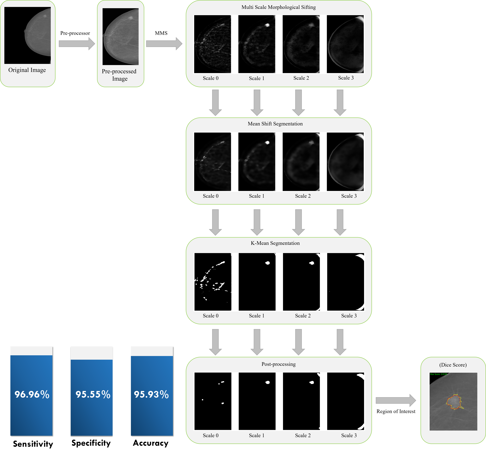
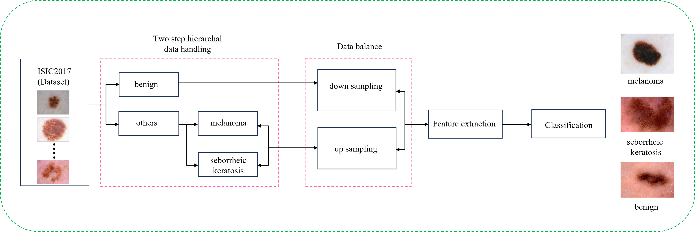
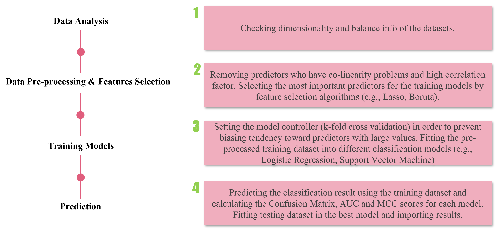

Spatial Transcriptomics Analysis of Tumor Immune Exclusion
Visium HD pipeline for identifying CAF-mediated T cell exclusion signatures in lung squamous cell carcinoma. Identified 8 candidate genes. Manuscript in preparation.

Projects
This page separates current research-level work from earlier academic coursework, helping supervisors and collaborators quickly assess the projects most relevant to my PhD trajectory in AI for healthcare.
Tier 1
Visium HD pipeline for identifying CAF-mediated T cell exclusion signatures in lung squamous cell carcinoma. Identified 8 candidate genes. Manuscript in preparation.
Benchmarked AB-MIL, CLAM, Trans-MIL, and foundation models for homologous recombination deficiency detection. Achieved AUC 0.78 on breast cancer whole-slide images.
ArXiv preprint
nnU-Net pipeline for automated echocardiogram segmentation. Dice scores: LV endocardium 0.94, LV epicardium 0.91, left atrium 0.93.

XGBoost pipeline integrating DNA methylation, CNV, mRNA, and miRNA data for breast cancer subtyping. Balanced multiclass accuracy: 0.90.

Tier 2
Comparative study of statistical and deep learning approaches for MRI brain tissue segmentation, including U-Net, LinkNet, and nnU-Net.
View project
Comparative evaluation of intensity-based and deep learning methods for inspiratory and expiratory lung CT registration using COPD image data.
View project
Transfer learning and ensemble modeling for automated skin lesion classification in a challenge setting.
View project
Unsupervised cluster-based segmentation of MRI brain tissues using EM and Gaussian mixture modeling, with preprocessing for improved robustness.
View project
Atlas-based brain tissue segmentation with analysis of affine and bspline registration strategies for improved alignment and segmentation quality.
View project
Machine learning workflow for breast mass detection, segmentation, and classification from mammographic images.
View project
Comprehensive analysis of transfer learning and machine learning techniques for clinically relevant skin lesion diagnosis.
View project
Classification of Alzheimer's disease, mild cognitive impairment, and control groups using MRI and gene expression data with feature selection.
View project